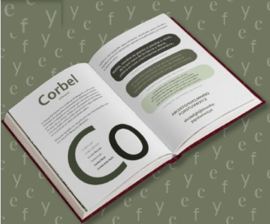

Aplicaciones sugeridas
Manrope
- Diseñada para lectura en pantallas, clara y neutra.
- Buena para subtítulos, UI/UX y contenido informativo.
- Comunica estabilidad, confianza y accesibilidad.
- Aporta un aire contemporáneo sin ser invasiva o dominante.
- Funciona bien en proyectos tecnológicos, educativos o administrativos.
Outfit
- Perfecta para interfaces limpias y modernas.
- Minimalista y versátil, se adapta a textos digitales.
- Útil en apps, sitios web o presentaciones corporativas.
- Legible en tamaños pequeños, ideal para navegación o etiquetas.
- Combina fácilmente con serifas si se quiere jerarquía equilibrada.
Playfair Display
- Ideal para encabezados elegantes o editoriales.
- Transmite sofisticación, tradición y seriedad.
- Funciona bien en marcas de moda, portadas de libros o sitios culturales.
- Crea contraste visual atractivo cuando se combina con sans serif limpias.
- Aporta un toque clásico en proyectos que necesitan autoridad y presencia.
Este proyecto surge como un ejercicio de exploración y organización tipográfica. A través de un catálogo impreso —empastado de forma manual— reunimos distintas entes, variables y estilos, acompañados por textos muestra basados en sonetos. La intención fue generar una experiencia editorial cuidada desde la selección hasta la disposición del contenido.
Paralelamente, desarrollamos una interfaz web donde esta misma información se adapta al entorno digital. Este tipo de catálogos son fundamentales para comprender la diversidad, ncionalidad y expresividad de la tipografía en contextos tanto gráficos como interactivos.



Historia de las letras
Testigos del Tiempo
Las letras han sido testigos del paso del tiempo, adaptándose y transformándose con cada civilización, tecnología y necesidad humana. Desde los primeros trazos tallados en piedra por culturas ancestrales, hasta las elegantes curvas de la caligrafía y las tipografías digitales que habitamos hoy, cada letra cuenta una historia.
Todo comenzó con la necesidad de dejar constancia. En Sumeria, los pictogramas sobre tablillas de arcilla dieron paso al cuneiforme. En Egipto, los jeroglíficos combinaban arte y lenguaje. Luego vino el alfabeto fenicio, más práctico, que inspiró a griegos y romanos, y formó la base del alfabeto latino que usamos en gran parte del mundo.
MAR GARIBAY
Diseñadora Gráfica
✉ castellanosgmar@gmail.com
☎ 33 28 37 26 57
IG @mcaste__